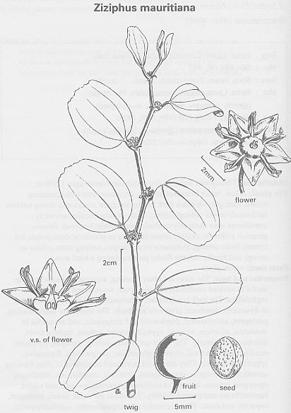

|
ECONOMICALLY
IMPORTANT PLANTS OF INDIA |
| Under-utilized Food and Fodder species and their wild relatives | Contributed by Ms.M.L Annapurna And Dr. Dhanapal, UAS, Bangalore |
Ziziphus mauritiana Lam.

HABIT & HABITAT:
It is a small evergreen tree, it
is cultivated throughout the greater part of India; Punjab, Haryana, Rajasthan,
Uttar Pradesh and Gujarat and countries like Central Asia, China and Taiwan.
Availability :
Status :
DIAGNOSTIC FEATURES
A small, evergreen tree of variable size, up to 15 m. or even
more in height, with a spreading crown and stipular spines, found both wild
and cultivated throughout the greater part of India, ascending to an altitude
of c.1, 500 m. in the Himalayas. Low shrubby form is common. Bark rough, grey
or dull black; leaves variable, oblong-elliptic, ovate or suborbicular, closely
serrulate or entire, rounded at both ends, prominently flowers greenish yellow,
in axillary cyme oblong-globose or ovoid, red, orange or yellowish.
The Indian Jujube, Zizyphus mauritiana, is a beautiful evergreen tree up to forty feet or more from the Asian Tropics. The dark, rounded green leaves are very attractive and they have a light undersurface which is almost white. When the leaves flutter in the wind, the tree has a very attractive appearance.
The flowers are yellowish-white, borne in clusters along the leaf axils and this is shortly followed by the rounded fruit which can be anywhere from three-quarters of an inch to an inch-and-a-half in size. A layer of edible pulp surrounds the hard central stone and the fruits vary considerably in thickness and quality of the pulp. At maturity, fruits are generally light yellowish-orange to almost brown in color. Many people say that when these are eaten fresh, they have flavor somewhat resembling that of a green apple. Older fruits which have been allowed to sit for a few days before being eaten often will have a flavor almost like a date.
Breeding System :
Cytological survey of 37 varieties of the Punjab showed that Indian jujubes
are monohapliod (n =12) and show an array of forms, viz. diploid, penta-, hexa
and octaploid. Out of the 37 varieties 34 were tetraploid (2n=48), one pentaploid
(2n=60) two octaploid (2n=96). Tetraploids show two important properties, viz.
quadrivalent formation and seggregation. Both properties are the attributes
of segmental allo- polyploids. Associated with this, there is also sterility
(16-35%) found in the various tetraploid. Obviously, this is the result of the
recombination of homologous chromosomes of the parents.
Phenology :
The old leaves fall during March-April and simultaneously the new leaves appear.
The flowers appear during April-October, the period varying in different localities,
and the fruits ripen after about a period of five months from October to March.
Pollinators:
Insect pollinated, because of the nectarifrous disk, which results in hybridization.
Seed Biology :
Seedling Germination :
Vegetative propogation: important method to overcome
the constraints and to obtain good quality fruits.
1. Cutting: The leafy cuttings 8-12 cm long at 26°-28°showed high percentage
of rooting.
2. Stooling
3. Budding: Among T or I budding, ring, patch and forkert budding best was shield
budding( T or I budding). The time of budding depends on temperature, humidity
and availability of budding material.
4. Grafting
5. Rootstocks: The rootstocks are commonly raised from seeds of wild species.
6. Raising of seedlings
7. Top working
8. Tissue culture: micropropagation and somatic embryogenesis Mulching and weed control reduces weed population and increases
the yield.
Trees are easily propagated by seeds, however, seedlings take two to three years to start fruit production. Superior varieties can be air-layered or grafted, but be careful because this tree does have quite formidable small spines. When pruning trees, one has to very careful about coming in contact with the short spines along the stems.
Trees grow well over a wide variety of soil types and seem to have very few insect problems. In wet weather, however, leaf diseases may attack the foliage, causing it to be brown- or black-spotted and unattractive for brief periods.
Trees should be fertilized two to three times a year with a good-quality complete fertilizer for good growth and fruiting and the heaviest fruit production occurs during the early spring months. Often trees will bloom again during the late summer or early fall and have a second crop during autumn as well.
If one has an abundance of fruit, it can be frozen for long periods without any deterioration of quality.
Mature trees are quite cold-hardy and can withstand temperatures down into the upper twenties without serious cold damage. Young trees, though, need to be protected at 32¡F.
Germination of Ber seeds is difficult due to endocarp and requires about 3-4
weeks. Germination time can be reduced to one week by cracking the endocarp
carefully. Germination of freshly harvested seeds can improved by 6 minutes
soaking in sulphuric acid and one year old seeds for 24 hours followed by stratification
in moist sand for 4 days. Direct sowing of seeds in the field is recommended for Z. mauritiana.
Cultivation:
Z. mauritiana is an example of an extremely drought-hardy species, and
is a dominant component of the natural vegetation of the Indian desert. These
trees are well adapted to seasonal drought and hot conditions. In India during
the summer months of May and June, Z. mauritiana enters into dormancy by
shedding its leaves. These trees perform well even on marginal and inferior
lands where most other fruit tree species either fail to grow or give poor
performance. In India, the scions of varieties which have been selected to
improve the yield and fruit quality are routinely grafted on to the vigorous
rootstocks of wild species to provide a reasonable cash crop on land which is
unsuitable for other forms of cultivation.
Z. mauritiana is reported as having a great power to recover from injury
of any kind, including fire, and thrives on burnt grassy tracts. After such
events, most plants of Z. mauritiana resprouted vigorously within 3
months and by the 4th month after fire, burnt and unburnt plants were similar
with respect to the distribution of individuals and their physiological
characteristics. Because of its ability to resprout from both crown and roots,
along with its resistance to herbicides,
Best time for planting ber is Feb-Mar in Punjab and July-Aug. in dry regions
of Western India.
It can be grown in a wide range of soils including porous and unfertile soils.
It can be grown in alkali soils with high pH and sodicity. In such soils mix
5 kg gypsum per pit followed by flooding for one week before planting. Sandy
loam soils with neutral or slightly alkaline reaction make good growth of plants.
The temparature below freezing is injurious to the fruits as well as to young
plants. Trees come into dormancy in May-June when it is very hot in the northern
plains of India. This is best time for pruning of plants. The growth, flowering
and maturity are correlated with temparature.
Lighting during night increases flowering and fruit set.
Leguminous crops are peferred as intercrops after 4 to 5 years as they enrich
the soil.
Irrigation: Owing to very deep tap root system and xerophytic nature, ber plant
is very hardy and once it gets established, needs little care and irrigation.
Ber terrs need irrigation from Nov.-Feb. after fruit setting for better fruit
development. No irrigation at the time if flowering. Irrigation at monthly intervel
after Nov.-Feb. reduses fruit drop.
Application of 40-50 kg FYM in July and 0.75 gm ammonium sulphate per tree in
october is recommended. Deficiency of N,P and K inhibits shoot length, leaf number,
axillary branch production, flowering and fruit set.
For farmers, Z. mauritiana is an interesting crop because it is so fast-growing and bears fruits within 2-3 years. The yield varies according to precocity and bearing potential of different types, but it increases progressively with the age of the trees. In India, Umran is the highest yielding cultivar of Z. mauritiana in Punjab, giving an average yield of 80-200 kg ha-1. In Australia, some large specimens of Z. mauritiana were reported as producing more than 5000 seeds per plant in 1 year, but with great variation between individual shrubs and between seasons.
MAJOR PESTS & DISEASES
Pests:
Fruit fly ( Carpomyia vesuviana): very seriou in September. Larvae feed
on pulp and the infested fruits become deformed, rotting may takes place and
fruits will drop down.
Bark eating caterpillar (Indarbela quadrinotata) eats away the bark of
the tree and severe damage reduses the yield.
Hairy caterpillar( Euprotis fraterna) :feed on leaves in initial stage
and older caterpillars also feed on fruits and tender shoots and damage the
trees.
Mite( Larvacarus transitans, Eriophyes cernus): Galls will form
on the tree.
Leaf chafer( Adoretus pallens): Beetles will feed on the leaves during
night.
Lac insects( Laccifera lacca,L.communis, L.indica): will affect
the shoot and suck the sap from branches which ultimately dry up.
Diseases:
Powdery mildew( Oidium sp.): occurs in Oct.-Nov. when temperature becomes
low. White spots of fungus appear on leaves and fruits. The fruits drop prematurely
or become sunken, misshapen and corky.
Sooty mould or black spot (Isariopsis app.) : leaves will drop down.
Alternaria leaf spot ( Alternaria alternata): Dark gray spots appear on lower
surface of leaves and leaves may fall off.
Phoma leaf spot
Fruit rot :Light grey-brown spots appear on the lower end of the fruits.
Parts used
Fruits, Roots, Stem Bark, Leaves, Stem, Wood and whole plant.
Harvesting
Practices
Harvesting in May-June. Hand picking is in practice.
Produce and Products
Squash, Juice, Pickles, Dry fruits, Ber butter